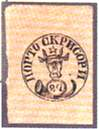
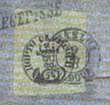
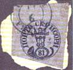
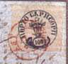
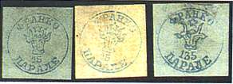
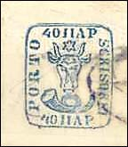

ROMANIAN CLASSICAL STAMPS
Bull Heads, 1858 - 1859
Victor Manta, PWO, AIJP. Suisse
The renown Romanian (Moldavian) coat of arms stamps issued in 1858 belong to the jewels of the world philately. Hand stamped in very small quantities, they were already collected by the greatest stamps collectors of the past, like Count Ferrari and Burrus.
|
 |
 |
 |
 |
They display the head of a (probably mythical) animal named Bour and for this reasons they are known in Romanian under the name of Capete de Bour. This animal is the symbol of Moldova (Moldavia) and his head appears also on later Romanian stamps, because Moldova became later a province of Romania. The recently becoming independent Republic of Moldova has also good reasons to consider these stamps as its first stamps. The values shown by the stamps are: 2 parale, 54 parale, 81 parale, 108 parale. The stamps presented above were sold in 1999 auction of the Swiss auction house Corinphila.
|
 |
 |
See
above some fake stamps, fabricated in Romania in 1881, and known under the
name of Moroiu fakes. A 135 parale value is the result of the big fantasy of
the faker, the highest issued value being of 108 parale. They aren't very dangerous, like the so called Sperati fakes.
Next to it please take a look at the 40 parale value from the second Bull's
Heads issue, 1859.